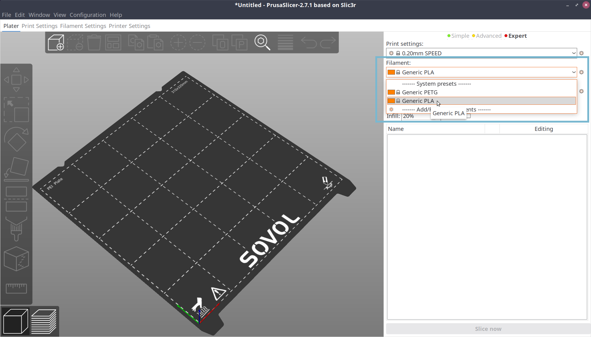
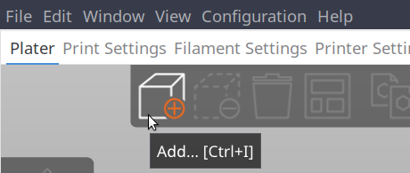

Prepare a model to print
Choose a model
First, decide what you'd like to print! Two popular models to start with are:
- Cali Cat - The Calibration Cat was my first print! The examples on this page will use Cali Cat.
- #3DBenchy, or "Benchy," a little boat and a very popular calibration and benchmarking model.
Download the files for the model you choose.
Your browser will download a ZIP file, which contains one or more model files (generally in STL format). Unzip the ZIP file to a new folder on your computer.
Connect microSD card
The instructions for the printer to use will be saved on a microSD card. Connect a microSD card to your computer so files can be saved on it.
Slice model
As explained before on Slicer setup, a 3D model is a representation of a 3-dimensional object. A 3D model needs to be "sliced," or converted, into a set of instructions for the printer to follow called G-code.
Start PrusaSlicer. The default view is the Plater, or the build plate preview.
Info
The build plate is the flexible steel sheet that sits on top of the heated print bed on the printer.
Select print settings
The top three drop-downs in the right pane are the print presets. Each time you prepare (slice) a model, check that the correct presets are selected. The three types of presets are:
-
Layer height: How high each printed layer should be. Taller layers print faster (since fewer layers are needed), but the resulting object won't be as strong. The options in this drop-down also depend on the size of nozzle installed on your printer. Nearly all printers, including the Sovol SV06 Plus, default to a 0.4mm nozzle. A good default layer height is half of the nozzle size, or in this case 0.2mm. The default selected print profile, 0.2mm SPEED, is a good choice for most prints.
-
Filament: Filament is the material that printer uses to make an object. There are many types of filament. A very common and beginner-friendly type of filament is called polylactic acid, or PLA. On first run, PrusaSlicer defaults to PETG, a different type of material. Click the Filament drop-down and change the selection to Generic PLA.
 -
Printer: The printer to make G-code for. PrusaSlicer will default to the custom Sovol SV06 Plus profile created after following the previous Slicer setup guide.
Load model
Loading the model you'd like to print into PrusaSlicer is called importing the model.
Note
Import and open in PrusaSlicer are different. Open takes a project file instead of a model file.
Import your chosen model file (such as Cali Cat's calicat.stl) by doing one of:
- Dragging and dropping
calicat.stlfrom your file manager onto the open PrusaSlicer window - Clicking the Add button on the top toolbar in the Plater view, and
selecting
calicat.stlin the file browser
 - Using the keyboard shortcut Ctrl+I (Cmd+I on Mac), and selecting
calicat.stlin the file browser
Cali Cat will appear on the build plate in the Plater view.
Slice!
For your first print, all of the remaining default settings can be kept.
On the bottom of the right pane, click Slice now!
After slicing the model, PrusaSlicer displays two important estimates:
- The amount of filament predicted to be used in grams
- The length of time the print is expected to take
PrusaSlicer estimates Cali Cat will need around 7 grams of filament and will take 50 minutes to print.
Export G-code
Slicing has created G-code that the printer can use. With a microSD card connected to your computer, there is a small icon on the very bottom right for saving the G-code to the microSD card.
Alternatively, you can click the Export G-Code button (in the same place where "Slice now" used to be) to save the file manually.
Export the generated G-code to the microSD card.
Move microSD card to printer
The microSD card is ready for the printer. Select the option to safely eject or remove the microSD card in your computer's file manager.
Disconnect the microSD card from the computer, and insert it into the microSD ("TF") slot on the printer next to the Micro USB port. The top of the microSD card should face inward (toward the print bed).